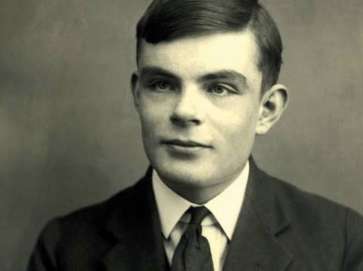

Alan Turing (ca. 1938)
Alan Mathison Turing OBE, FRS (* 23. Juni 1912 in London; † 7. Juni 1954 in Wilmslow, Cheshire) war ein britischer Logiker, Mathematiker, Kryptoanalytiker, Philosoph und Informatiker. Er gilt heute als einer der einflussreichsten Theoretiker der frühen Computerentwicklung und Informatik. Turing schuf einen großen Teil der theoretischen Grundlagen für die moderne Informations- und Computertechnologie. Als richtungsweisend erwiesen sich auch seine Beiträge zur theoretischen Biologie. Das von ihm entwickelte Berechenbarkeitsmodell der Turingmaschine bildet eines der Fundamente der theoretischen Informatik. Während des Zweiten Weltkrieges war er maßgeblich an der Entzifferung der mit der deutschen Rotor-Chiffriermaschine Enigma verschlüsselten deutschen Funksprüche beteiligt. Der Großteil seiner Arbeiten blieb auch nach Kriegsende unter Verschluss.
Turing entwickelte 1953 eines der ersten Schachprogramme, dessen Berechnungen er mangels Hardware selbst vornahm. Nach ihm benannt sind der Turing Award, die bedeutendste Auszeichnung in der Informatik, sowie der Turing-Test zum Überprüfen des Vorhandenseins von künstlicher Intelligenz.
Im März 1952 wurde Turing wegen seiner Homosexualität, die damals noch als Straftat verfolgt wurde, zur chemischen Kastration verurteilt. Turing erkrankte in Folge der Hormonbehandlung an einer Depression und starb etwa zwei Jahre später vermutlich durch Suizid.
Im Jahr 2009 sprach der damalige britische Premierminister Gordon Brown eine offizielle Entschuldigung im Namen der Regierung für die „entsetzliche Behandlung“ Turings aus und würdigte dessen „außerordentliche Verdienste“ während des Krieges. Noch 2011 wurde eine Begnadigung trotz einer Petition abgelehnt. 2013, am Weihnachtsabend, sprach Königin Elisabeth II. postum ein „Royal Pardon“ (Königliche Begnadigung) aus.
Leben und Wirken
Kindheit und Jugend
Alan Turings Vater, Julius Mathison Turing, war britischer Beamter beim Indian Civil Service. Er und seine Frau Ethel Sara Turing (geborene Stoney) wünschten, dass ihre Kinder in Großbritannien aufwüchsen. Deshalb kehrte die Familie vor Alans Geburt aus Chhatrapur, damals Britisch-Indien, nach London-Paddington zurück, wo Alan Turing am 23. Juni 1912 zur Welt kam. Da der Staatsdienst seines Vaters noch nicht beendet war, reiste dieser im Frühjahr 1913 erneut nach Indien, wohin ihm seine Ehefrau im Herbst folgte. Turing und sein älterer Bruder John wurden nach St Leonards-on-the-Sea, Hastings, in die Familie eines pensionierten Obersten und dessen Frau in Pflege gegeben. In der Folgezeit pendelten die Eltern zwischen England und Indien, bis sich Turings Mutter 1916 entschied, längere Zeit in England zu bleiben, und die Söhne wieder zu sich nahm.
Schon in früher Kindheit zeigte sich die hohe Begabung und Intelligenz Turings. Es wird berichtet, dass er sich innerhalb von drei Wochen selbst das Lesen beibrachte und sich schon früh zu Zahlen und Rätseln hingezogen fühlte.
Im Alter von sechs Jahren wurde Turing auf die private Tagesschule St Michael’s in St Leonards-on-the-Sea geschickt, wo die Schulleiterin frühzeitig seine Begabung bemerkte. 1926, im Alter von vierzehn Jahren, wechselte er auf die Sherborne School in Dorset. Sein erster Schultag dort fiel auf den Generalstreik von 1926. Turing war jedoch so motiviert, dass er die 100 Kilometer von Southampton zur Schule allein auf dem Fahrrad zurücklegte und dabei nur einmal in der Nacht an einer Gaststätte Halt machte; so berichtete jedenfalls die Lokalpresse.
Turings Drang zur Naturwissenschaft traf bei seinen Lehrern in Sherborne auf wenig Gegenliebe; sie setzten eher auf Geistes- als auf Naturwissenschaften. Trotzdem zeigte Turing auch weiterhin bemerkenswerte Fähigkeiten in den von ihm geliebten Bereichen. So löste er für sein Alter fortgeschrittene Aufgabenstellungen, ohne zuvor irgendwelche Kenntnisse der elementaren Infinitesimalrechnung erworben zu haben.
Im Jahr 1928 stieß Turing auf die Arbeiten Albert Einsteins. Er verstand sie nicht nur, sondern entnahm einem Text selbständig Newtons Bewegungsgesetz, obwohl dieses nicht explizit erwähnt wurde.
Filme über Alan Turing
| Jahr | Titel |
|---|---|
| 1996 | Breaking the Code |
| 2001 | Enigma - Das Geheimnis |
| 2011 | Codebreaker |
Collegezeit und theoretische Arbeiten
Turings Widerstreben, für Geisteswissenschaften genauso hart wie für Naturwissenschaften zu arbeiten, hatte zur Folge, dass er einige Male durch die Prüfungen fiel. Weil dies seinen Notendurchschnitt verschlechterte, musste er 1931 auf ein College zweiter Wahl gehen, das King’s College, Cambridge, entgegen seinem Wunsch, am Trinity College zu studieren. Er studierte von 1931 bis 1934 unter Godfrey Harold Hardy (1877–1947), einem renommierten Mathematiker, der den Sadleirian Chair in Cambridge innehatte, das zu der Zeit ein Zentrum der mathematischen Forschung war.
In seiner für diesen Zweig der Mathematik grundlegenden Arbeit On Computable Numbers, with an Application to the “Entscheidungsproblem” (28. Mai 1936) formulierte Turing die Ergebnisse Kurt Gödels von 1931 neu. Er ersetzte dabei Gödels universelle, arithmetisch-basierte formale Sprache durch einen einfachen gedanklichen Mechanismus, eine abstrakt-formale Zeichenketten verarbeitende mathematische Maschine, die heute unter dem Namen Turingmaschine bekannt ist. („Entscheidungsproblem“ verweist auf eines der 23 wichtigsten offenen Probleme der Mathematik des 20. Jahrhunderts, vorgestellt von David Hilbert 1900 auf dem 2. Internationalen Mathematiker-Kongress in Paris [„Hilbertsche Probleme“].) Turing bewies, dass solch ein Gerät in der Lage ist, „jedes vorstellbare mathematische Problem zu lösen, sofern dieses auch durch einen Algorithmus gelöst werden kann“.
Turingmaschinen sind bis zum heutigen Tag einer der Schwerpunkte der theoretischen Informatik, nämlich der Berechenbarkeitstheorie. Mit Hilfe der Turingmaschine gelang Turing der Beweis, dass es keine Lösung für das „Entscheidungsproblem“ gibt. Er zeigte, dass die Mathematik in gewissem Sinne unvollständig ist, weil es allgemein keine Möglichkeit gibt, festzustellen, ob eine beliebige, syntaktisch korrekt gebildete mathematische Aussage beweisbar oder widerlegbar ist. Dazu bewies er, dass das Halteproblem für Turingmaschinen nicht lösbar ist, d. h., dass es nicht möglich ist, algorithmisch zu entscheiden, ob eine Turingmaschine, angesetzt auf eine Eingabe (initiale Bandbelegung), jemals zum Stillstand kommen wird, das heißt die Berechnung terminiert. Turings Beweis wurde erst nach dem von Alonzo Church (1903–1995) mit Hilfe des Lambda-Kalküls geführten Beweis veröffentlicht; unabhängig davon ist Turings Arbeit beträchtlich einfacher und intuitiv zugänglich. Auch war der Begriff der „Universellen (Turing-) Maschine“ neu, einer Maschine, welche jede beliebige andere Turing-Maschine simulieren kann. Die Eingabe für diese Maschine ist also ein kodiertes Programm, das von der universellen Maschine interpretiert wird, und der Startwert, auf den es angewendet werden soll.
Alle bis heute definierten Berechenbarkeitsbegriffe haben sich (bis auf die Abbildung von Worten auf Zahlen und umgekehrt) als äquivalent erwiesen.
1938 und 1939 verbrachte Turing zumeist an der Princeton University und studierte dort unter Alonzo Church. 1938 erwarb er den Doktorgrad in Princeton. Seine Doktorarbeit führte den Begriff der „Hypercomputation“ ein, bei der Turingmaschinen zu sogenannten Orakel-Maschinen erweitert werden. So wurde das Studium von nicht-deterministisch lösbaren Problemen ermöglicht.
Karriere und Forschung
Nach seiner Rückkehr nach Cambridge im Jahr 1939 besuchte Turing Vorlesungen des österreichisch-britischen Philosophen Ludwig Wittgenstein (1889–1951) über die Grundlagen der Mathematik. Die Vorlesungen wurden Wort für Wort aus den Notizen der Studenten rekonstruiert, einschließlich Zwischenrufe von Turing und anderen Studenten. Die beiden diskutierten und stritten vehement: Turing verteidigte den mathematischen Formalismus, während Wittgenstein der Meinung war, dass Mathematik überbewertet sei und keine absolute Wahrheit zutage bringen könne.
Kryptoanalyse
Während des Zweiten Weltkriegs war Turing einer der herausragenden Wissenschaftler bei den erfolgreichen Versuchen in Bletchley Park (B.P.), verschlüsselte deutsche Funksprüche zu entziffern. Er steuerte einige mathematische Modelle bei, um sowohl die Enigma als auch die Lorenz-Schlüsselmaschine zu brechen. Die Einblicke, die Turing bei der Kryptoanalyse der Fish-Verschlüsselungen gewann, halfen später bei der Entwicklung des ersten digitalen, programmierbaren elektronischen Röhrencomputers ENIAC. Konstruiert von Max Newman und seinem Team und gebaut in der Post Office Research Station in Dollis Hill von einem von Tommy Flowers angeführten Team im Jahr 1943, entzifferte Colossus die Lorenz-Maschine. Auch konzipierte Turing die nach ihm benannten Bombes. Sie waren Nachfolgerinnen der von dem Polen Marian Rejewski entwickelten Bomba und dienten zur Ermittlung der Schlüssel von Enigma-Nachrichten. Dabei handelte es sich um ein elektromechanisches Gerät, das im Prinzip mehrere Enigma-Maschinen beinhaltete und so in der Lage war, viele mögliche Schlüsseleinstellungen der Enigma-Nachrichten durchzutesten und zu eliminieren, bis eine mögliche Lösung gefunden war (Reductio ad absurdum; deutsch Zurückführung bis zum Widerspruch).
Turings Mitwirkung als einer der wichtigsten Codeknacker bei der Entzifferung der Enigma war bis in die 1970er Jahre geheim; nicht einmal seine engsten Freunde wussten davon. Die Entzifferung geheimer deutscher Funksprüche war eine kriegsentscheidende Komponente für den Sieg der Alliierten im U-Boot-Krieg und im Afrikafeldzug.
Arbeit an frühen Computern – Der Turing-Test
Von 1945 bis 1948 war Turing im National Physical Laboratory in Teddington tätig, wo er am Design der ACE (Automatic Computing Engine) arbeitete. Der Name der Maschine ist abgeleitet von der Analytical Engine des Mathematikers Charles Babbage, dessen Werk Turing zeitlebens bewunderte.
Ab 1948 lehrte Turing an der Universität Manchester und wurde im Jahr 1949 stellvertretender Direktor der Computerabteilung. Hier arbeitete er an der Software für einen der ersten echten Computer, den Manchester Mark I, und gleichzeitig weiterhin verschiedenen theoretischen Arbeiten. In Computing machinery and intelligence (Mind, Oktober 1950) griff Turing die Problematik der künstlichen Intelligenz auf und schlug den Turing-Test als Kriterium vor, ob eine Maschine dem Menschen vergleichbar denkfähig ist. Da der Denkvorgang nicht formalisierbar ist, betrachtet der Test nur die Antworten einer Maschine im Dialog mit einem Menschen, d. h. das kommunikative Verhalten der Maschine. Wenn dieses von einem menschlichen Verhalten nicht unterscheidbar erscheint, soll von maschineller Intelligenz gesprochen werden. Er beeinflusste durch die Veröffentlichung die Entwicklung der künstlichen Intelligenz maßgeblich.
1952 schrieb er das Schachprogramm Turochamp. Da es keine Computer mit ausreichender Leistung gab, um es auszuführen, übernahm Turing dessen Funktion und berechnete jeden Zug selbst. Dies dauerte bis zu 30 Minuten pro Zug. Das einzige schriftlich dokumentierte Spiel verlor er gegen einen Kollegen.
Arbeit an mathematischen Problemen der theoretischen Biologie
Von 1952 bis zu seinem Tod 1954 arbeitete Turing an mathematischen Problemen der theoretischen Biologie. Er veröffentlichte 1952 eine Arbeit zum Thema The Chemical Basis of Morphogenesis. In diesem Artikel wurde erstmals ein Mechanismus beschrieben, wie Reaktions-Diffusions-Systeme spontan Strukturen entwickeln können. Dieser als Turing-Mechanismus bekannte Prozess steht noch heute im Mittelpunkt vieler chemisch-biologischer Strukturbildungstheorien. Turings weiteres Interesse galt dem Vorkommen der Fibonacci-Zahlen in der Struktur von Pflanzen. Spätere Arbeiten blieben bis zur Veröffentlichung seiner gesammelten Werke 1992 unveröffentlicht.
Verfolgung wegen Homosexualität und Turings Tod
1952 half der 19-jährige Arnold Murray, zu dem Turing eine gleichgeschlechtliche Beziehung hatte, einem Komplizen dabei, in Turings Haus einzubrechen. Turing meldete daraufhin einen Diebstahl bei der Polizei, die ihm als Folge der Ermittlungen eine sexuelle Beziehung zu Murray vorwarf. Da homosexuelle Handlungen zu dieser Zeit in England – wie in den meisten anderen Ländern – strafbar waren, wurde Turing wegen „grober Unzucht und sexueller Perversion“ angeklagt. Turing sah keinen Anlass, sich wegen dieser Vorwürfe zu rechtfertigen.
Nach seiner Verurteilung zu einer Gefängnisstrafe wurde er vor die Wahl gestellt, die Haftstrafe anzutreten oder – da zu seiner Zeit Homosexualität von weiten Teilen der Psychiatrie als Krankheit angesehen wurde – sich behandeln zu lassen. Er entschied sich für die ärztliche Behandlung, zu der auch eine medikamentöse Behandlung mit dem Hormon Östrogen gehörte. Diesem wurde eine triebhemmende Wirkung zugeschrieben. Die Behandlung dauerte ein Jahr und führte zu Nebenwirkungen wie der Vergrößerung der Brustdrüse. Auch wenn er seine körperlichen Veränderungen mit Humor kommentierte, muss die Verweiblichung seiner Konturen den sportlichen Läufer und Tennisspieler schwer getroffen haben. Turing erkrankte an einer Depression. Im Herbst 1952 begann Turing seine Therapie bei dem aus Berlin stammenden und seit 1939 in Manchester lebenden Psychoanalytiker Franz Greenbaum. Dieser war ein Anhänger C. G. Jungs und war ihm von Freunden als für seinen Fall verständnisvoll empfohlen worden. Turing entwickelte auch ein freundschaftliches Verhältnis zur Familie Greenbaum, die er auch privat besuchte.
Nach seiner Verurteilung schrieb Turing, wahrscheinlich spät im Jahr 1952 oder früh im Jahr 1953, eine autofiktionale Kurzgeschichte über ein Cruising-Treffen zweier Männer, die als Pryce’s Buoy bezeichnet wurde. Sie wurde erst 2026 vollständig transkribiert.
1954 starb Turing im Alter von 41 Jahren, wahrscheinlich entsprechend der offiziellen Feststellung durch Suizid, an einer Cyanidvergiftung. Dem Anschein nach von einem vergifteten Apfel herrührend, den man halb aufgegessen neben ihm auffand. Die Ermittler versäumten es jedoch, den Apfel auf Gift untersuchen zu lassen. Es wird berichtet, dass Turing seit 1938, nachdem er den Film Schneewittchen und die sieben Zwerge gesehen hatte, immer wieder die Verse Dip the apple in the brew / Let the sleeping death seep through (In der deutschen Version: „Tauch den Apfel tief hinein / bis das Gift wird in ihm sein.“) sang. Der These, dass Turings Tod ein Unfall im Zusammenhang mit einem chemischen Versuch war, wird von Andrew Hodges, einem seiner Biographen, entschieden widersprochen. Unter seinen Biographen ist die Annahme verbreitet, die Auswirkungen der Hormonbehandlung seien die Hauptursache für den Suizid gewesen.